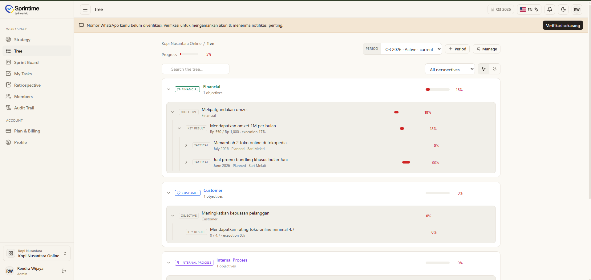
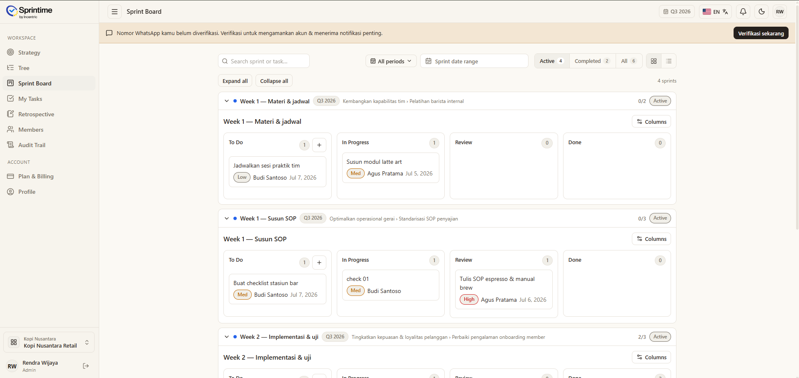

Melipatgandakan omzet
1 Key Result
KEY RESULT
Mendapatkan omzet 1M per bulan
Sprint Productivity System
BSC + OKR + Sprint, terhubung langsung ke task harian setiap anggota tim.
Sprintime bukan hanya tool. Ini adalah framework kerja yang mengubah rencana besar menjadi hasil nyata.
14 hari penuh. Semua fitur. Tanpa kartu kredit.
Mendapatkan omzet 1M per bulan
Video
Sprintime memandu tim dari perspektif BSC, turun ke OKR, dipecah menjadi sprint, lalu muncul sebagai task harian yang bisa dilacak.

Satu platform. Empat kekuatan.
Susun strategi bisnis dengan framework BSC yang disederhanakan: Financial, Customer, Internal Process, Learning & Growth dalam satu tampilan.
Set Objectives & Key Results yang terhubung langsung ke strategi. Tidak ada lagi OKR yang hidup sendiri di spreadsheet.
Jalankan sprint mingguan atau dua-mingguan dengan prioritas yang jelas. Setiap sprint terhubung ke OKR, bukan sekadar to-do list.
Setiap anggota tim punya task yang jelas, terlacak, dan bermakna. Leader bisa melihat progress real-time tanpa menanyakan satu per satu.

Inilah kenapa Sprintime berbeda
Kami tidak hanya membangun tool. Kami membangun Sprint Productivity System, metodologi yang membantu perusahaan Indonesia menghubungkan visi mereka ke eksekusi harian.
Cara Kerja Sprintime
Masukkan perspektif bisnis Anda, lalu terjemahkan strategi menjadi Objectives & Key Results yang terukur. Sprintime memastikan setiap OKR terhubung ke perspektif BSC yang tepat.
Pecah Key Results menjadi rencana taktis bulanan: siapa yang bertanggung jawab, apa target minimalnya, dan kapan deadline-nya.
Setiap minggu, tim tahu persis apa yang harus dikerjakan. Sprint planning, sprint review, dan progress update berada dalam satu tempat.
Setiap anggota tim punya task list yang terhubung ke sprint, OKR, dan strategi bisnis. Tidak ada kerja tanpa makna.
Tackle your problems
"Setiap kuartal bikin OKR, tapi pertengahan jalan sudah lupa. Tim jalan sendiri-sendiri."
Sprintime menghubungkan OKR langsung ke sprint mingguan, sehingga tim bekerja dalam konteks tujuan besar perusahaan.
"Saya harus chat satu per satu untuk tahu progress. Tidak ada visibility sama sekali."
Dashboard Sprintime memberi visibility real-time: siapa mengerjakan apa, progress sprint, dan OKR yang butuh perhatian.
"Notion untuk docs, Trello untuk tasks, spreadsheet untuk OKR. Tidak ada yang nyambung."
Sprintime menggantikan setup manual dengan satu sistem kohesif yang framework-nya sudah built-in.
"Karyawan hanya tahu task mereka, tapi tidak tahu hubungannya ke tujuan perusahaan."
Setiap task punya konteks: sprint, OKR, dan strategi bisnis. Tim paham kenapa mereka bekerja.
Tools to empower
Mulai gratis
Free 14 hari. Semua fitur. Tidak perlu kartu kredit.
Free
Semua fitur aktif untuk mencoba Sprint Productivity System bersama tim.
Mulai GratisPro
Untuk tim yang ingin menjalankan BSC, OKR, sprint, task, dan laporan dalam satu sistem.
Tanya ProCustomized
Untuk perusahaan yang butuh workflow, struktur goal, dan implementasi yang disesuaikan.
KonsultasiFAQ
Tidak. Sprintime menggabungkan framework strategi, OKR, sprint, dan task dalam satu alur kerja.
Tidak. Sprintime membantu tim mulai dari BSC, lalu menerjemahkannya menjadi OKR dan sprint.
Ya. Tim bisa menjalankan sprint mingguan atau dua-mingguan sesuai ritme operasional.
Tidak. Trial 14 hari dapat digunakan tanpa kartu kredit.